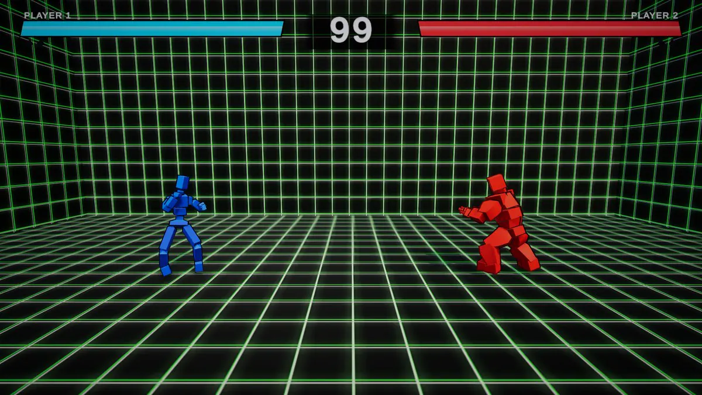

Proyecto individual, 2026
Counterhit
El núcleo de combate de un juego de lucha 2.5D, con combates locales a dos jugadores con mando o teclado.
Qué hice: la máquina de estados del combate, el frame data de cada movimiento, un buffer de entrada que lee motion inputs, combos, juggles y hitstop.
- Unity 6
- C#